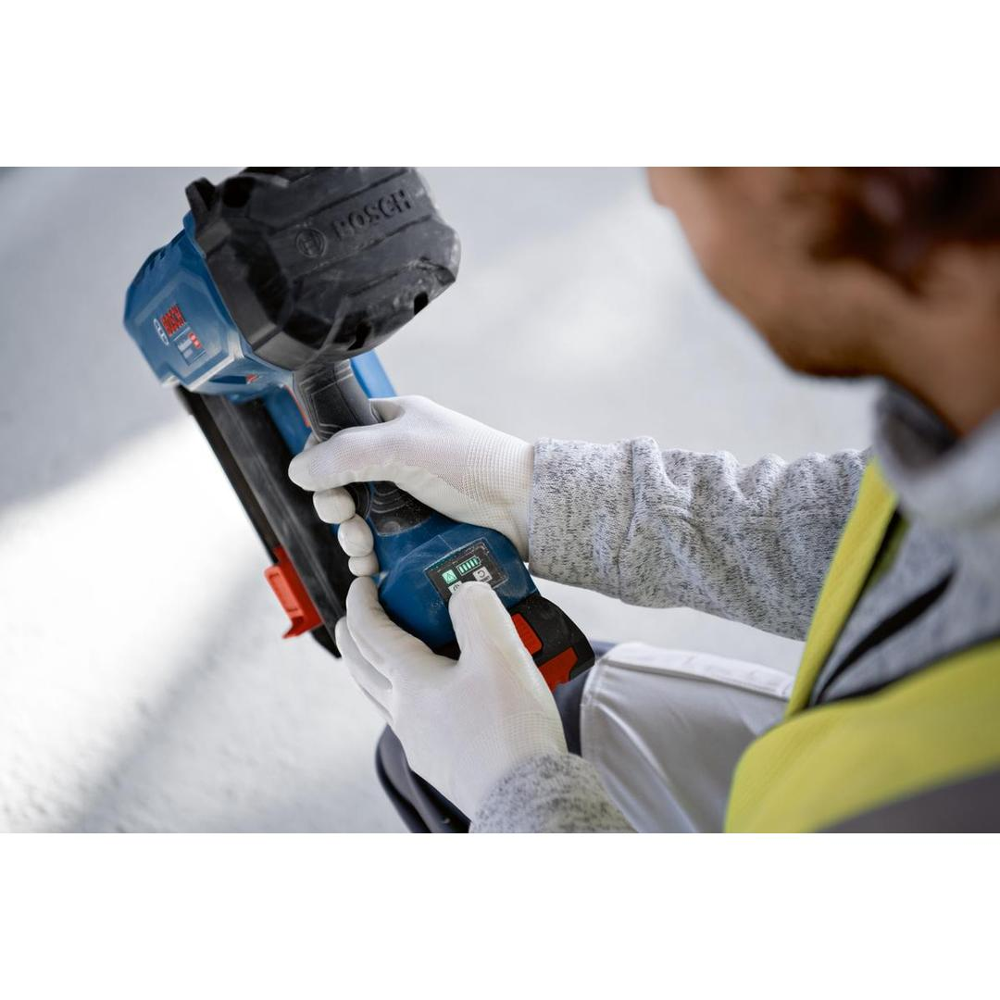
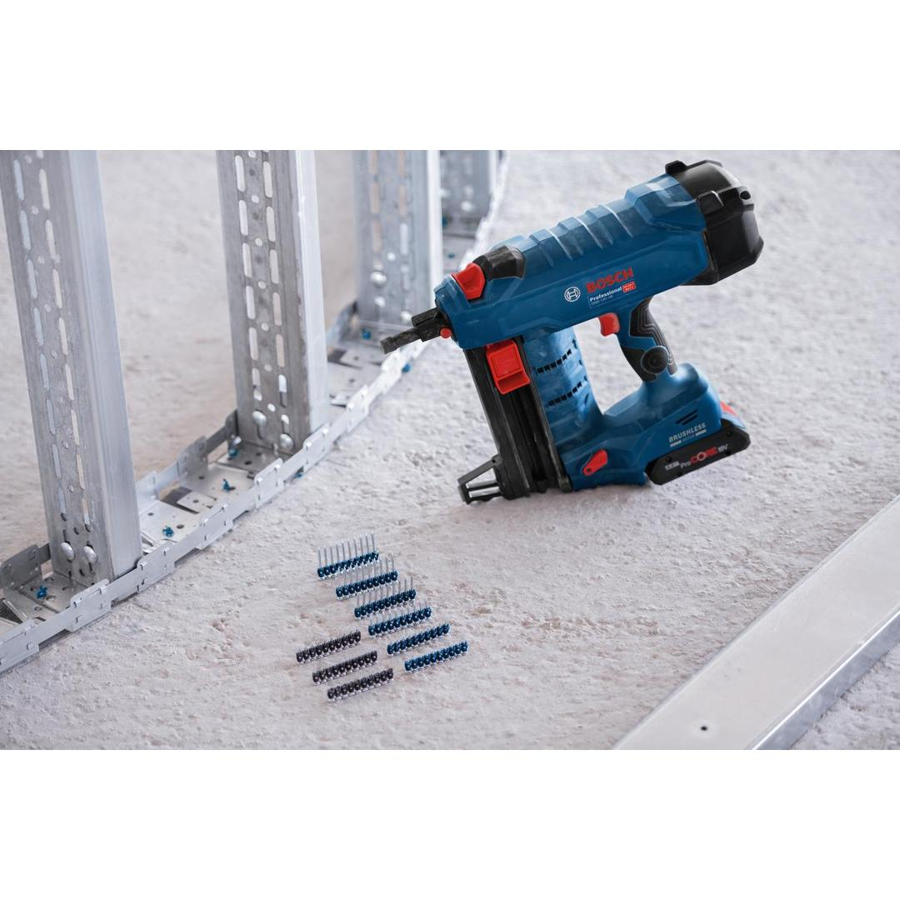
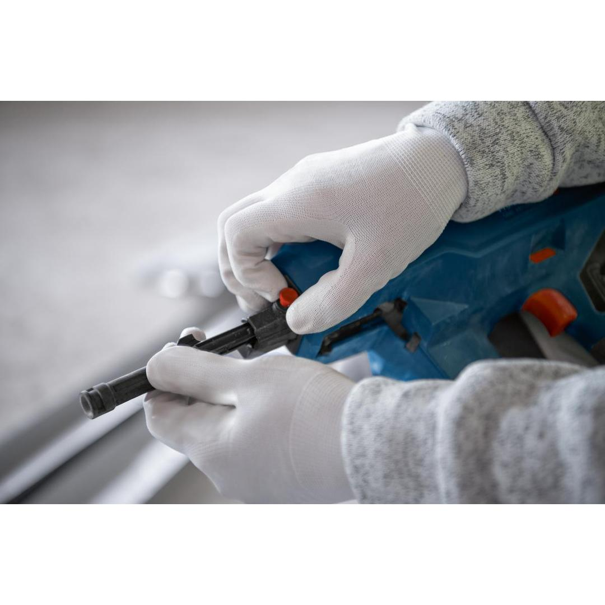
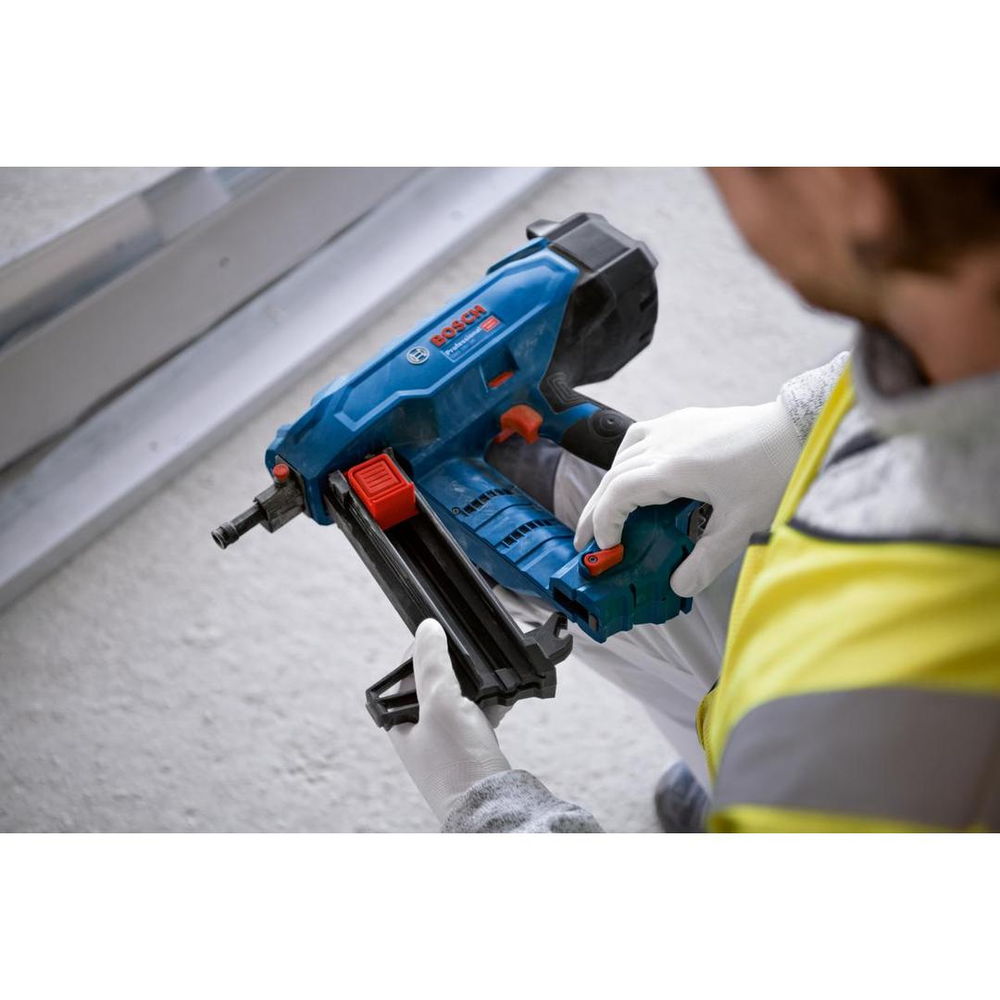
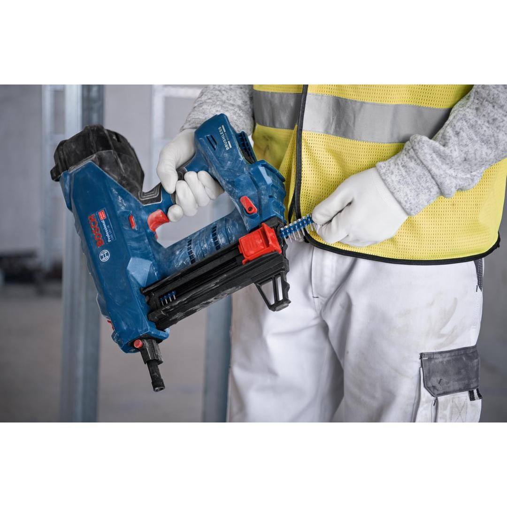
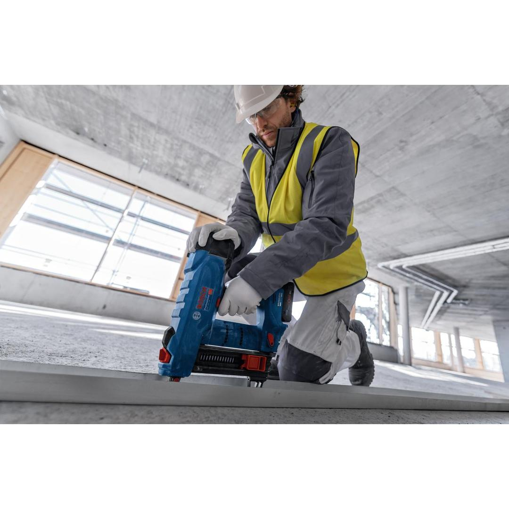
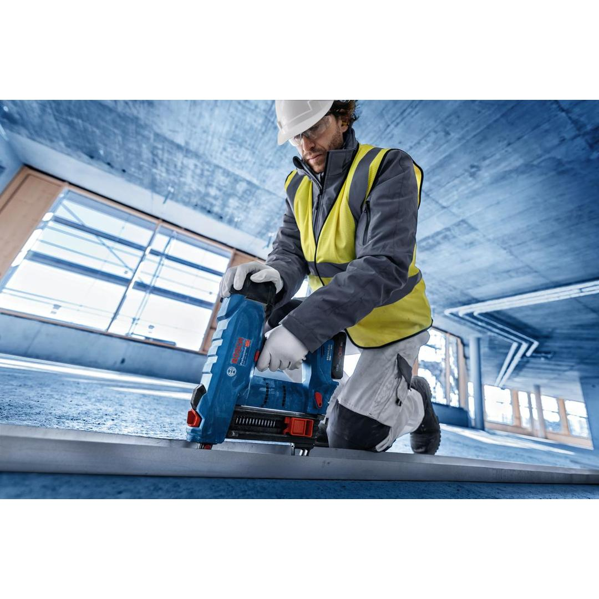
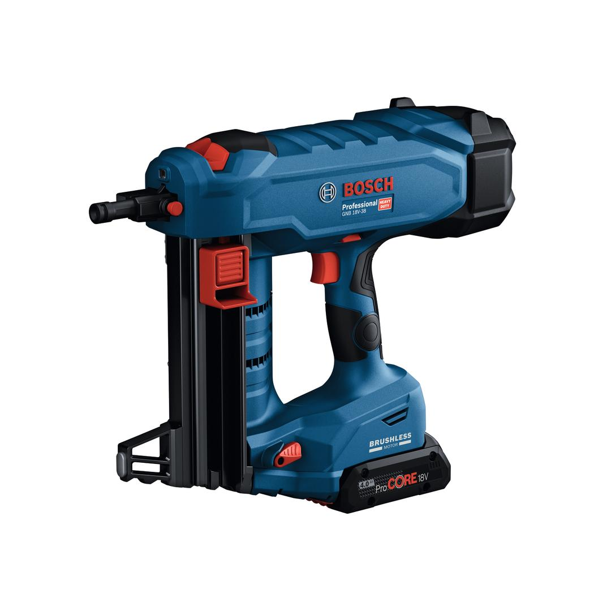
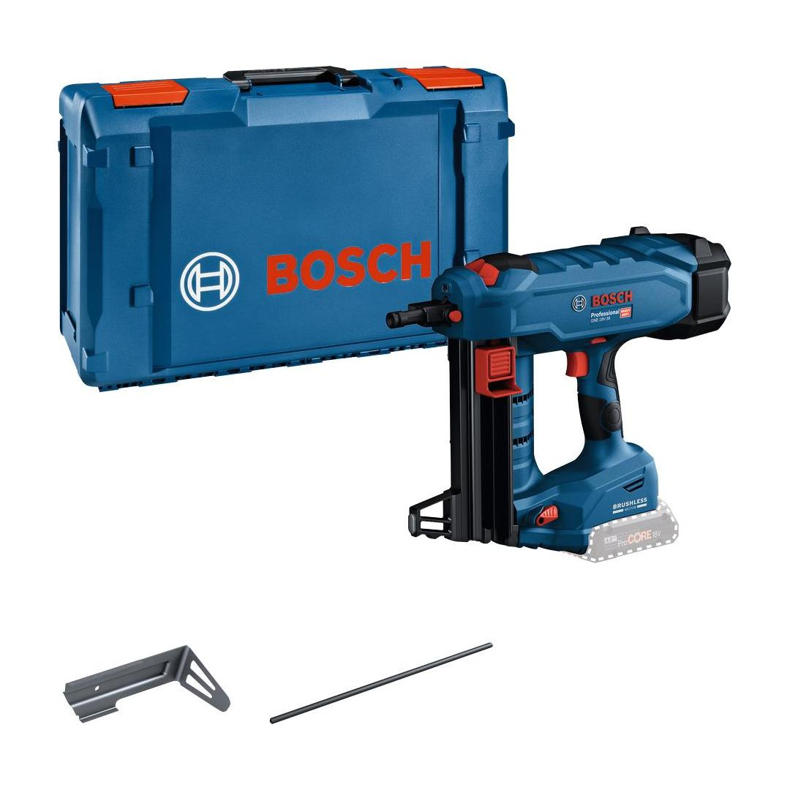

06019L7001











| Noise level |
The A-rated noise level of the power tool is typically as follows: Sound pressure level 85 dB(A); Sound power level 96 dB(A). Uncertainty K= 3 dB. |
| Tool dimensions (width) |
138 mm |
| Tool dimensions (length) |
405 mm |
| Tool dimensions (height) |
309 mm |
| Battery voltage |
18.0 V |
| Sound pressure level |
85 dB(A) |
| Sound power level |
96 dB(A) |
| Uncertainty K |
3 dB |
| Collation angle |
0 ° |
| Nail diameter |
2.7 – 3 mm |
| Nail length |
13 – 38 mm |
| Nail/Staple type |
Pin |
| Weight excl. battery |
4.1 kg |
| Magazine capacity |
22 Pcs |
| BITURBO |
Yes |
Easy and efficient fastening in concrete with powerful brushless technology
Fastening your steel tracks on tough materials like concrete and steel has to be easy, efficient, and intuitive. The GNB 18V-38 Professional helps you to get this job done. It is driven by our powerful brushless technology and is part of the Bosch Professional 18V System. All you need is one EXPERT battery and you are good to go – no additional gas cartridges necessary. We developed a reliable fastening system that includes both tool and nails. This allows you to fully focus on your job. The certified galvanised carbon steel nails ensure lasting durability in concrete and steel. We offer an array of nails ranging from 16 mm to 38 mm for concrete, and 13 mm to 19 mm for steel applications. Tool and nails have been tested and certified according to ETA or ICC.
Compatible with the Bosch Professional 18V System and with the multi-brand battery alliance AMPShare.